<!-- .slide: class="content" --> ## Why detection? * Attackers dwell time is getting quicker * Detection coverage needs to increase to more endpoints. * Automation! * Ultimately detection is about: * Maximize probability of detecting malicious action * Minimize probability of false positives --- <!-- .slide: class="content" --> ## Why engineering? * Involves designing a better detection process * Systematic - Clear process to follow. * Iterative - increase accuracy, reduce false positive. * Testable - Reduce chance of regressions * Engineering involves design * Maximize the probability of detection * Design new event sources to increase accuracy. --- <!-- .slide: class="full_screen_diagram small-font" --> ## Where does Detection Engineering fit?  https://cyb3rops.medium.com/about-detection-engineering-44d39e0755f0 --- <!-- .slide: class="content" --> ## Detection Engineering role * More than just typing queries into SIEM * More emphasis on the Engineering side. * Feedback cycle --- <!-- .slide: class="full_screen_diagram small-font" --> ## The detection pipeline  --- <!-- .slide: class="content" --> ## The detection pipeline 1. Event Generation on the endpoint 2. Pre-filtering on the endpoint 3. Data normalization and enrichment 4. Transport and storage 5. Detection ---- <!-- .slide: class="content small-font" --> ## Anatomy of an attack * We will study the example of privilege escalation using `PsExec` * It is a very well known and well detected vector. * We just use it as an example. * You may be very familiar with this, but... * Let's think about how we can detect this attack * Then lets think about how to make it more robust! * Download psexec.exe ```bash curl -o psexec.exe https://live.sysinternals.com/psexec.exe ``` --- <!-- .slide: class="content small-font" --> ## Exercise: Sysmon and ECS * Generate some interesting events ``` psexec.exe /s cmd.exe ``` * Privilege escalate to `SYSTEM` user! * This will normally be done across the network (Lateral movement) * For this demonstration we use it locally * Check the event viewer for the logs! --- <!-- .slide: class="full_screen_diagram small-font" --> ## Attack is launched  --- <!-- .slide: class="full_screen_diagram small-font" --> ## Setting the Eula PsExec helps detection by setting a `EULA` registry key!  --- <!-- .slide: class="full_screen_diagram small-font" --> ## Extract the payload and copy to the system This will normally be done remotely over RPC  --- <!-- .slide: class="full_screen_diagram small-font" --> ## Install the service This will normally be done remotely over RPC 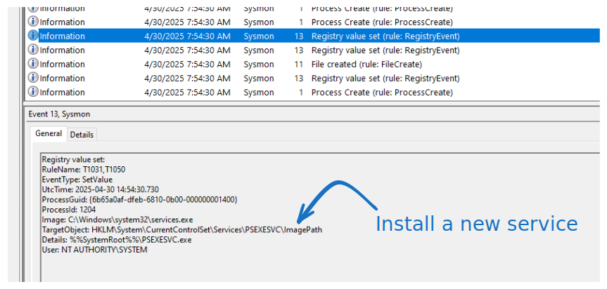 --- <!-- .slide: class="full_screen_diagram small-font" --> ## Launch the service remotely. Service is launched by the service manager so runs as SYSTEM 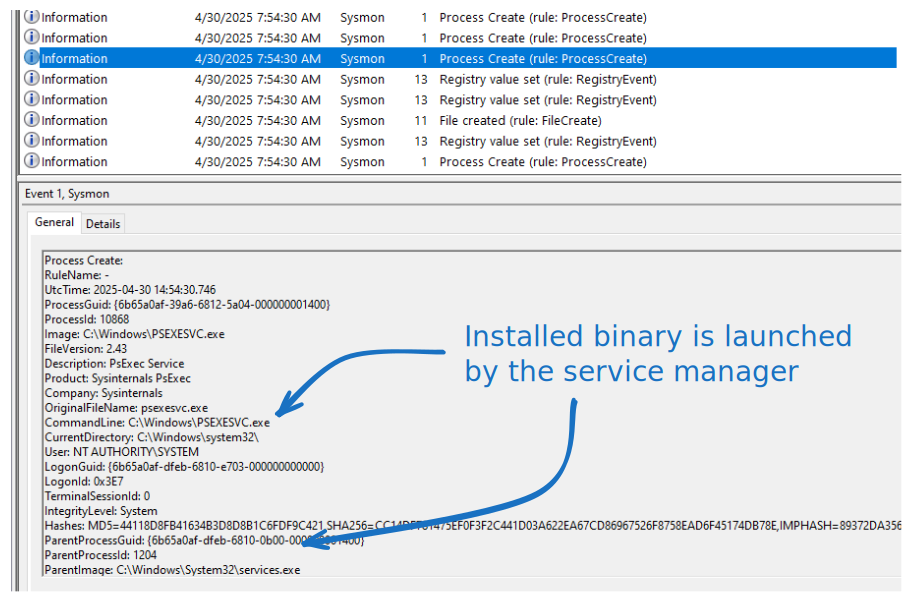 --- <!-- .slide: class="full_screen_diagram small-font" --> ## Collect the artifact Windows.EventLogs.Evtx ### This artifact parses the raw event logs 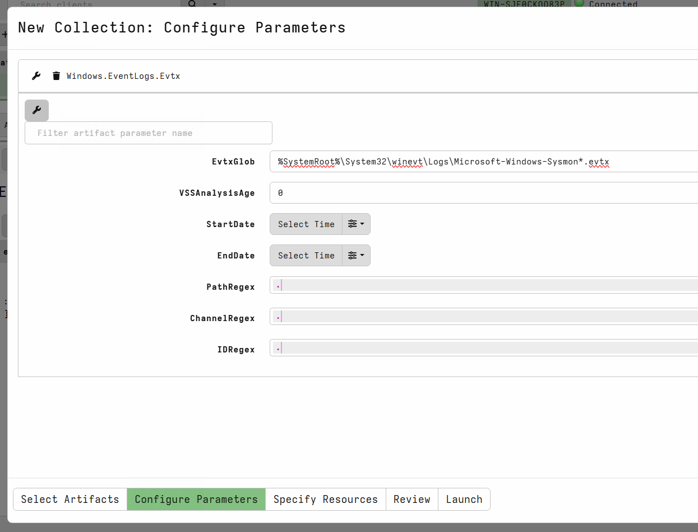 --- <!-- .slide: class="full_screen_diagram small-font" --> ## Collect the artifact Windows.EventLogs.Evtx ### Event logs have a defined "shape" 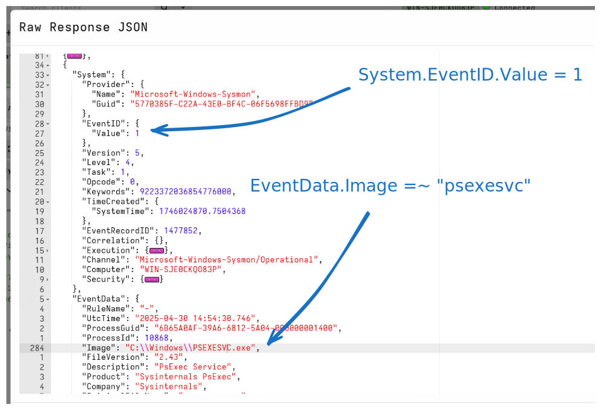 --- <!-- .slide: class="full_screen_diagram small-font" --> ## Collect the artifact Elastic.EventLogs.Sysmon 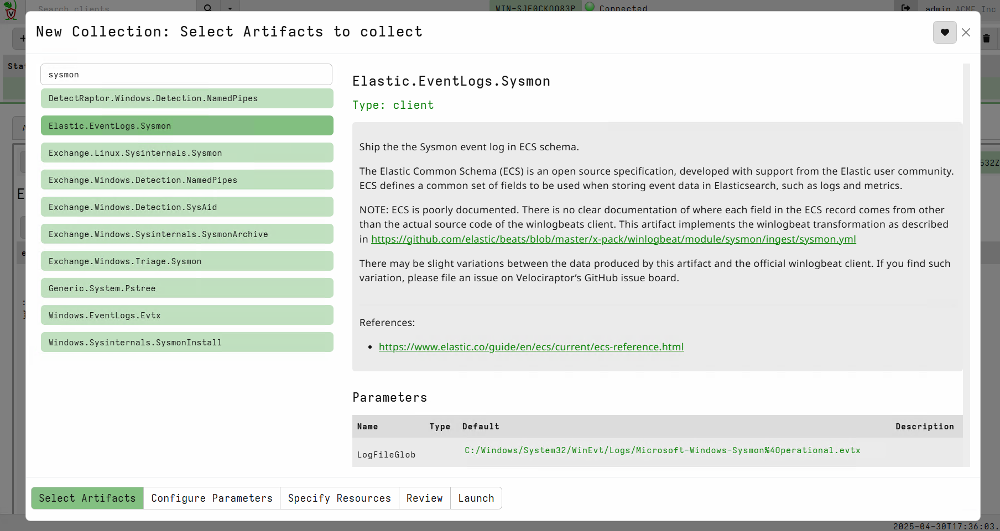 --- <!-- .slide: class="full_screen_diagram small-font" --> ## Collect the artifact Elastic.EventLogs.Sysmon ### ECS Events have a defined "shape" 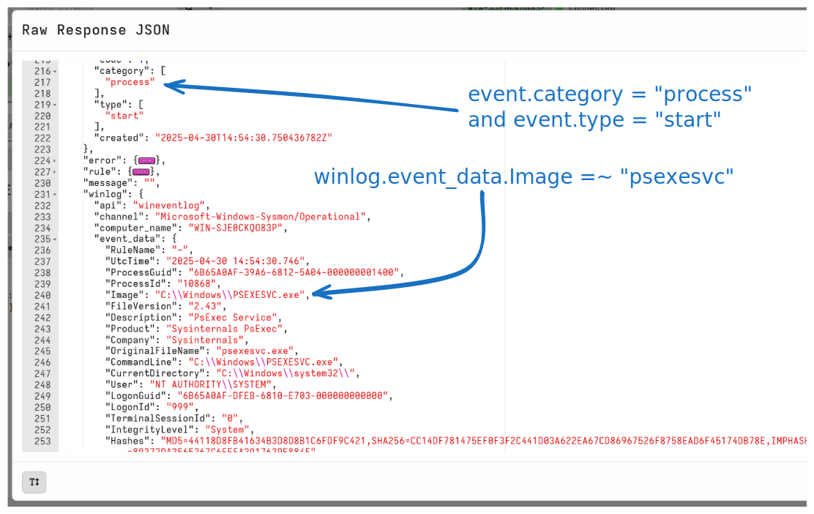 --- <!-- .slide: class="content small-font" --> ## How would we detect this "attack"? * Let's detect: Spawning of the `psexecsvc.exe` service * Filter the raw Windows Event Log collection by adding a WHERE clause to isolate the attack. * You can post process the collected data in the notebook --- <!-- .slide: class="full_screen_diagram small-font" --> ## How would we detect this "attack"? 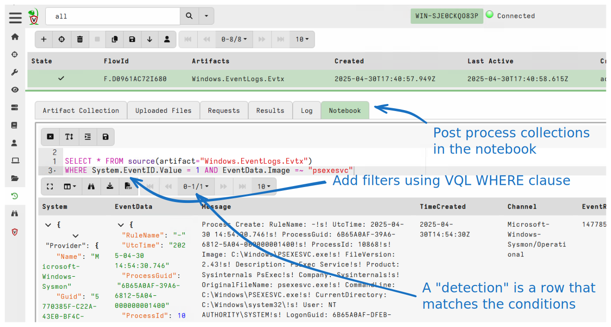 --- <!-- .slide: class="full_screen_diagram small-font" --> ## How would we detect this "attack"? 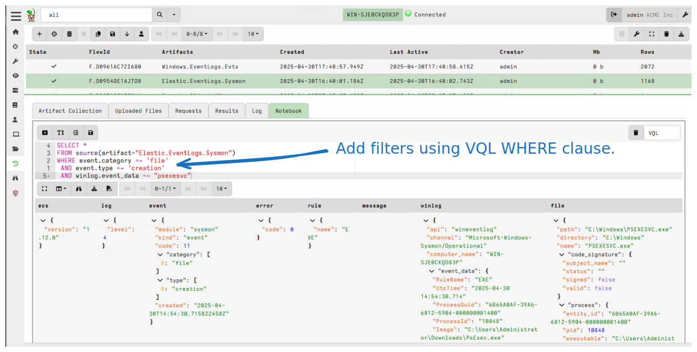 --- <!-- .slide: class="content small-font" --> ## How can we communicate this detection? * We could share queries with others * Depending on which event collection system they use, the queries are not easily interchanged * What could go wrong? * Different pre-filtering might exclude the relevant events * Different fields might be collected * Data shape is different in different data storage systems. * We will come back to this! --- <!-- .slide: class="content small-font" --> ## Making the detection robust * Clear the event logs to start fresh. * Rename the `psexec.exe` file to `nothing.exe`. ``` copy psexec.exe nothing.exe ``` * Launch the service with a different service name ``` nothing.exe -r nothing -s cmd.exe ``` --- <!-- .slide: class="full_screen_diagram small-font" --> ## Renamed service file 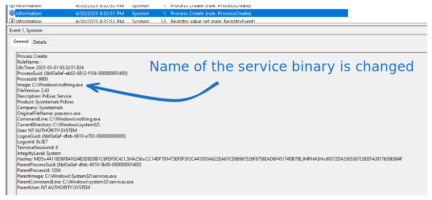 --- <!-- .slide: class="full_screen_diagram small-font" --> ## Recollect our detection query ### No hits! 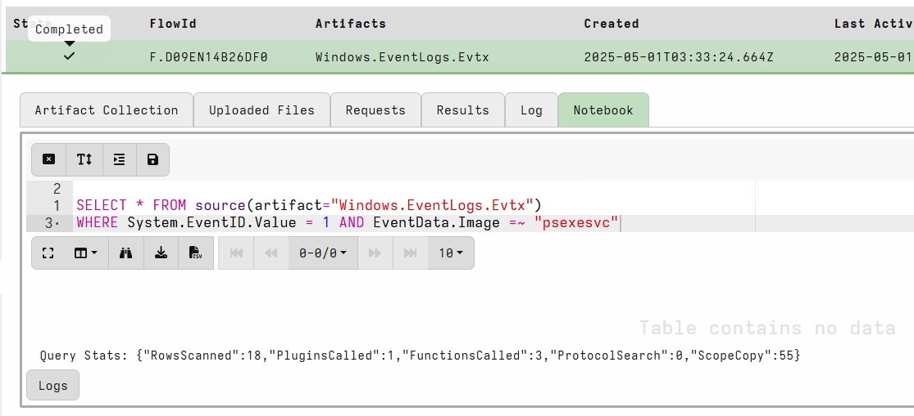 --- <!-- .slide: class="content small-font" --> ## How can we make the detection more robust? * Consider other pieces of information! * Sysmon provides **some** metadata found in the executable file itself. * `OriginalFilename` * `VersionInformation` * `Product` * `Description` * Simply renaming the binary does not change the data inside the file. --- <!-- .slide: class="full_screen_diagram small-font" --> ## Update the detection query ### Adding extra data points can improve detection  --- <!-- .slide: class="full_screen_diagram small-font" --> ## Take it to the next level ### Modify the Product string in the file 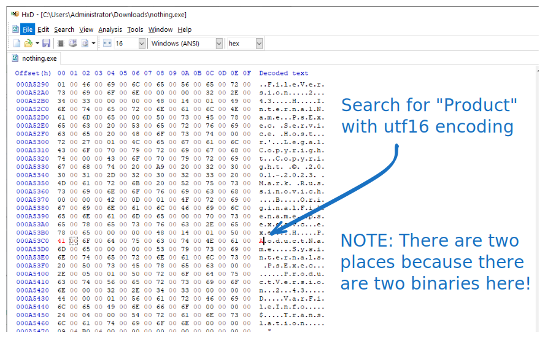 --- <!-- .slide: class="content small-font" --> ## Event is missing this field! 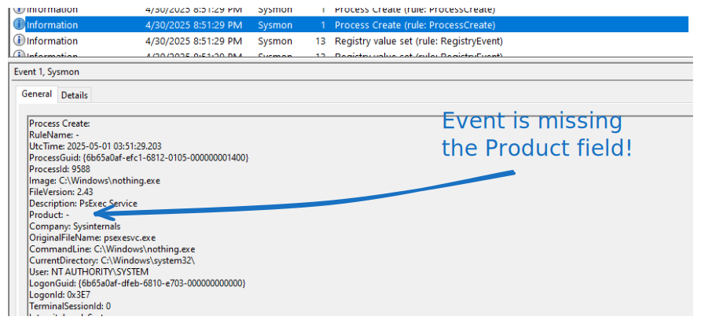 --- <!-- .slide: class="content small-font" --> ## Recap: what have we learnt? * Detection requires an event source * Event sources are usually normalized to an internal schema "shape" * Detection matches events against a "rule" * A match is a "hit" * Attackers can change their methodologies to bypadd detection rules * Rules can be improved by adding data points! * Communicating a detection is difficult! * Exact rules depend on the tech stack and specific configuration. * Not portable